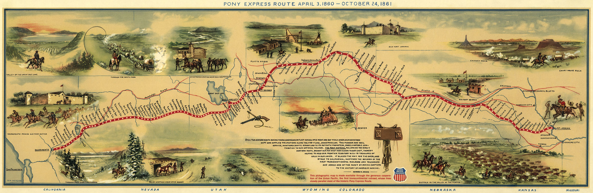

William Henry Jackson (1843-1942) was a noted artist and photographer who late in his life became a collaborator with the author Howard R. Driggs (1873-1963) on various representations of the Old West -- including this map depicting the route of the Pony Express during its brief existence. The map was probably created in the 1930s, when Driggs wrote a book about the Pony Express, but the image here is scanned from a reproduction of the map published in 1961 by the Union Pacific Railroad to commemorate the 100th anniversary of the Express.